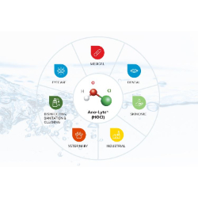
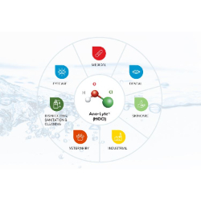

Sterilant
Applications for Sterilant Solutions Home, Hospitals, Hotels, kitchen, bathroom, nursery, office, basement, garage, baby room, etc…


 

Price: R295.00
Stock Availability: 10 items
Kills multiple drug resistant bacterium Kills H1N1 Swine influenza virus Kills Staphylococcus aureus (MRSA) and Salmonella enterica Kills Human Immunodeficiency Virus Type 1 (HIV-1) Kills Clostriduim difficile (C.diff) Spores Kills Listeria Monocytogenes A Tuberculocide Deodorizes No rinsing or protective clothing required Solution efficacy screening: The products were tested according to SANS 1196:2009 (Ed. 3) The products were tested against Pseudomonas aeruginosa ATCC 15442, Escherichia coli ATCC 10536 and Staphylococcus aureus ATCC 6538. Note: In instances where there was no bacterial growth present, the value will be indicated as “1” in order to accommodate the number on a logarithmic scale. Where there was too many bacteria to enumerate, the value will be indicated as 30 000, the maximum detection limit of the test. Efficacy against all bacteria tested: Contact time: 30 seconds
| Weight | Dimensions |
|---|---|
| 2.3 kg | 22 × 12 × 22 cm |